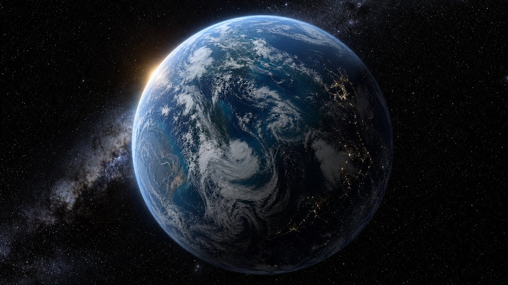

Salle 12 sur 17
Une science en avance sur son temps
Des affirmations bibliques étonnamment justes sur la Terre, la santé et le vivant.
Une salle à part
Lire sans forcer le texte
Cette salle ne présente pas de prophéties, mais six affirmations bibliques sur la Terre, l’eau, la santé, le ciel et la vie. Elles ont été écrites à une époque où d’autres textes racontaient tout autre chose.
La Bible n’est pas un manuel de science. Ses rédacteurs écrivent avec les mots de tous les jours, souvent en poètes, et le musée ne leur prête pas des connaissances modernes qu’ils n’expriment pas. Ici, il n’est question ni de gravitation, ni de microbes, ni d’ADN dans le texte.
La méthode est donc simple : pour chaque thème, on place côte à côte ce que l’on croyait à l’époque, ce que dit la Bible et ce que la science établira plus tard. Chaque rapprochement reçoit un badge honnête. Quand le sens d’un mot hébreu est discuté, le point est marqué Niveau de preuve : DÉBATTU.
Comparateur
Trois regards sur un même sujet
Choisissez un thème : à gauche, ce que l’on croyait ; au centre, le texte biblique ; à droite, ce qu’établira la science. La frise montre l’écart entre les deux dates.
La terre suspendue sur le néant
Ce que l’on croyait
Pour Thalès de Milet (vie s. av. n. è.), la terre flotte sur l’eau comme un morceau de bois (d’après Aristote, Du ciel, II, 13). Dans la mythologie grecque, le titan Atlas porte le ciel sur ses épaules (Hésiode, Théogonie).
Ce que dit la Bible · Job, achevé vers 1473 av. n. è.
« Il étend le nord sur le vide, il suspend la terre sur le néant. »
Ce qu’établira la science · Newton, 1687
La Terre ne repose sur rien : elle se maintient dans l’espace par la gravitation, décrite par Isaac Newton en 1687 dans ses Principes mathématiques de la philosophie naturelle.
Écart : environ 3 160 ans Niveau de preuve : DÉBATTU Voir le détail
Le cercle de la terre
Ce que l’on croyait
Une carte babylonienne du monde, gravée sur une tablette d’argile vers le vie s. av. n. è., représente la terre comme un disque plat entouré d’un anneau d’eau, le « Fleuve amer » (British Museum, n° 92687).
Ce que dit la Bible · Isaïe, achevé après 732 av. n. è.
« Lui, qui est assis au-dessus du cercle de la terre, et ses habitants sont comme des sauterelles, – qui étend les cieux comme une toile légère, et qui les déploie comme une tente pour y habiter ; »
Ce qu’établira la science · Aristote, vers 350 av. n. è.
Vers 350 av. n. è., Aristote défend la sphéricité de la Terre : son ombre sur la Lune, pendant les éclipses, est toujours ronde. Vers 240 av. n. è., Ératosthène en mesure la circonférence. Vue de l’espace, la Terre apparaît toujours comme un disque.
Écart : environ 380 ans Niveau de preuve : DÉBATTU Voir le détail
Le cycle de l’eau
Ce que l’on croyait
Aristote décrit déjà l’évaporation et la pluie (ive s. av. n. è.). Mais jusqu’au xviie siècle, beaucoup pensent que sources et rivières sont alimentées par l’eau de mer remontant sous terre, ou par un immense gouffre souterrain (Platon, Phédon).
Ce que dit la Bible · Job, achevé vers 1473 av. n. è.
« Car il attire les gouttes d’eau: des vapeurs qu’il forme elles distillent la pluie, Que les nuages font couler ; ils tombent en gouttes sur les hommes, abondamment. »
Ce qu’établira la science · Perrault, 1674
En 1674, Pierre Perrault montre que la pluie suffit à alimenter la Seine ; en 1687, Edmond Halley estime l’évaporation de la Méditerranée. Évaporation, condensation, précipitation : le cycle de l’eau est aujourd’hui décrit en détail.
Écart : environ 3 150 ans Niveau de preuve : DONNÉE HISTORIQUE Voir le détail
Quarantaine et hygiène
Ce que l’on croyait
Le papyrus Ebers, recueil médical égyptien d’environ 1550 av. n. è., réunit quelque 700 formules magiques et remèdes populaires, à côté d’observations justes sur les vaisseaux sanguins. Au Moyen Âge, on attribue encore les épidémies au « mauvais air ».
Ce que dit la Bible · Lévitique, achevé en 1512 av. n. è.
« Tout le temps que la plaie sera en lui, il sera impur ; il est impur ; il habitera seul, son habitation sera hors du camp. »
Ce qu’établira la science · Semmelweis, 1847
En 1847, à Vienne, Ignaz Semmelweis impose le lavage des mains aux médecins et fait chuter la mortalité des accouchées. La transmission des maladies par des micro-organismes n’est démontrée qu’ensuite, avec Louis Pasteur et Robert Koch.
Écart : environ 3 360 ans Niveau de preuve : DONNÉE HISTORIQUE Voir le détail
L’armée des cieux innombrable
Ce que l’on croyait
Le catalogue d’Hipparque (iie s. av. n. è.) recense environ 850 étoiles ; celui de Ptolémée (iie s. de n. è.), 1 022. À l’œil nu, par une nuit claire, on n’en distingue que quelques milliers.
Ce que dit la Bible · Jérémie, achevé en 580 av. n. è.
« Comme l’armée des cieux ne peut se nombrer, ni le sable de la mer se mesurer, ainsi je multiplierai la semence de David, mon serviteur, et les Lévites qui me servent. »
Ce qu’établira la science · Galilée, 1610
En 1610, la lunette de Galilée révèle que la Voie lactée est faite d’innombrables étoiles. Le satellite Gaia en a observé environ 2 milliards, et notre galaxie en compterait au moins 100 milliards. L’Agence spatiale européenne compare elle-même leur décompte à celui des grains de sable d’une plage.
Écart : environ 2 190 ans Niveau de preuve : FAIT ARCHÉOLOGIQUE Voir le détail
Le développement de l’embryon
Ce que l’on croyait
Pour Aristote (ive s. av. n. è.), l’embryon naît du sang menstruel « mis en forme » par la semence. Au xviie siècle, certains imaginent encore un être humain miniature, déjà tout formé, caché dans la semence : c’est la théorie de la préformation.
Ce que dit la Bible · Psaume de David, avant 1037 av. n. è.
« Tes yeux ont vu ma substance informe, et dans ton livre [mes membres] étaient tous écrits ; de jour en jour ils se formaient, lorsqu’il n’y en avait [encore] aucun. »
Ce qu’établira la science · Wolff, 1759
En 1759, Caspar Friedrich Wolff montre que les organes se forment progressivement. On sait aujourd’hui que le développement suit un programme précis : à la fin de la 8e semaine, tous les grands organes ont commencé à se former.
Écart : environ 2 800 ans Niveau de preuve : DÉBATTU Voir le détail
La Terre
Suspendue sur le néant
Les peuples anciens se demandaient sur quoi reposait la terre. Pour Thalès de Milet, elle flottait sur l’eau ; dans la mythologie grecque, le titan Atlas portait le ciel sur ses épaules. Le livre de Job, lui, répond en une phrase : la terre est suspendue « sur le néant ».
Il faudra attendre 1687 et Isaac Newton pour comprendre pourquoi la Terre n’a besoin d’aucun support : la gravitation la maintient sur son orbite autour du Soleil. Niveau de preuve : DÉBATTU
Le livre de Job est un poème : il ne décrit pas la gravitation. Mais là où d’autres cosmologies cherchaient un support, son image d’une terre suspendue « sur le néant » reste d’une justesse remarquable.
Sources : Britannica — Principia (Newton, 1687) (nouvel onglet)
Il étend le nord sur le vide, il suspend la terre sur le néant.

« Le cercle de la terre »
Isaïe décrit Dieu « assis au-dessus du cercle de la terre ». À la même époque, une carte babylonienne gravée sur l’argile montre un monde plat et rond, cerné par un fleuve. Les Grecs, eux, finiront par argumenter la sphéricité : Aristote vers 350 av. n. è., puis Ératosthène, qui mesure la circonférence de la Terre vers 240 av. n. è.
Lui, qui est assis au-dessus du cercle de la terre, et ses habitants sont comme des sauterelles, – qui étend les cieux comme une toile légère, et qui les déploie comme une tente pour y habiter ;
Dans le même sens
« Il a tracé un cercle fixe sur la face des eaux, jusqu’à la limite extrême où la lumière confine aux ténèbres. »
« Quand il disposait les cieux, j’étais là ; quand il ordonnait le cercle qui circonscrit la face de l’abîme, »
L’eau
La pluie qui remonte au ciel
D’où viennent les sources et les rivières ? Pendant des siècles, beaucoup ont pensé que l’eau de mer remontait sous terre jusqu’aux montagnes, ou qu’un immense gouffre souterrain alimentait tous les fleuves. Aristote décrivait déjà l’évaporation, mais l’idée d’un circuit souterrain a résisté jusqu’au XVIIe siècle.
En 1674, Pierre Perrault mesure la pluie tombée sur le bassin de la Seine et montre qu’elle suffit à alimenter le fleuve. En 1687, Edmond Halley estime l’eau qui s’évapore de la Méditerranée. Le cycle est bouclé : la mer, le ciel, la pluie, les rivières, la mer. Niveau de preuve : DONNÉE HISTORIQUE
Ces versets décrivent ce que l’on observe, sans théorie physique. Leur intérêt : la pluie y naît de « vapeurs » attirées vers le haut, et l’eau des rivières revient sans cesse à son point de départ.
Sources : USGS — The Water Cycle (nouvel onglet)
Car il attire les gouttes d’eau: des vapeurs qu’il forme elles distillent la pluie, Que les nuages font couler ; ils tombent en gouttes sur les hommes, abondamment.
Dans le même sens
« Toutes les rivières vont vers la mer, et la mer n’est pas remplie ; au lieu où les rivières allaient, là elles vont de nouveau. »
« C’est lui qui bâtit dans les cieux ses degrés, et qui a fondé sa voûte sur la terre ; qui appelle les eaux de la mer, et les verse sur la face de la terre ; Jéhovah est son nom. »
La santé
Isoler, laver, enfouir
Le papyrus Ebers, grand recueil médical égyptien d’environ 1550 av. n. è., mêle quelque 700 formules magiques et remèdes populaires à des observations justes sur les vaisseaux sanguins. Bien plus tard, au Moyen Âge, on attribue encore les épidémies au « mauvais air ».
La Loi donnée à Israël, elle, prescrit des gestes concrets : isoler sept jours la personne suspecte d’une maladie de peau, faire vivre le malade « hors du camp », se laver à l’eau après avoir touché un mort, enfouir les excréments à l’extérieur du camp.
Il faut attendre 1847 pour qu’à Vienne Ignaz Semmelweis impose le lavage des mains aux médecins et fasse chuter la mortalité des accouchées. Pasteur et Koch démontreront ensuite le rôle des micro-organismes. Niveau de preuve : DONNÉE HISTORIQUE
Tout le temps que la plaie sera en lui, il sera impur ; il est impur ; il habitera seul, son habitation sera hors du camp.
Dans le même sens
« Et si la tache dans la peau de sa chair est blanche, et si elle ne paraît pas plus enfoncée que la peau, et si le poil n’est pas devenu blanc, le sacrificateur fera enfermer pendant sept jours [celui qui a] la plaie ; »
« Celui qui aura touché un mort, un cadavre d’homme quelconque, sera impur sept jours. »
« et l’homme pur fera aspersion sur l’homme impur, le troisième jour et le septième jour, et il le purifiera le septième jour ; et il lavera ses vêtements, et se lavera dans l’eau, et le soir il sera pur. »
« Et tu auras un endroit hors du camp, et tu sortiras là dehors ; et tu auras, outre tes armes, un pieu ; et il arrivera, quand tu t’assiéras dehors, que tu creuseras avec ce [pieu], et tu te retourneras, et tu couvriras ce qui est sorti de toi. »
La Loi mêle prescriptions religieuses et mesures sanitaires, et ne parle pas de microbes. Mais isoler un malade, se laver à l’eau après avoir touché un mort et enfouir les excréments hors du camp sont des gestes que la médecine n’a justifiés que bien plus tard.
Sources : Britannica — Ignaz Semmelweis (nouvel onglet) · Britannica — Papyrus Ebers (nouvel onglet)
Le ciel
Innombrables comme le sable
Jérémie affirme que « l’armée des cieux ne peut se nombrer ». Les astronomes de l’Antiquité, eux, pensaient pouvoir compter les étoiles. Remontez le temps du décompte.

≈ 850
étoiles cataloguées par Hipparque
Le premier grand catalogue connu, dressé par l’astronome grec Hipparque, compte environ 850 étoiles, chacune avec sa position et son éclat.
1 022
étoiles dans le catalogue de Ptolémée
Ptolémée reprend et complète ce travail dans son grand traité d’astronomie : son catalogue compte 1 022 étoiles.
quelques milliers
étoiles visibles sans instrument
Loin de toute lumière, l’œil humain distingue quelques milliers d’étoiles. C’est tout ce que pouvaient voir les rédacteurs de la Bible.
innombrables
étoiles révélées par la lunette
En pointant sa lunette vers la Voie lactée, Galilée découvre que cette bande laiteuse est faite d’une multitude d’étoiles invisibles à l’œil nu.
≈ 2 milliards
étoiles observées par le satellite Gaia
Le satellite européen Gaia a observé environ 2 milliards d’étoiles de notre galaxie, soit une petite partie seulement de celles qu’elle contient. À cette échelle, chaque point affiché en représente des milliers.
1022 à 1024
étoiles dans l’Univers, selon l’ESA
Notre galaxie compterait de 100 à 1 000 milliards d’étoiles ; l’Univers, peut-être 1022 à 1024. L’Agence spatiale européenne compare ce décompte à celui des grains de sable d’une plage : l’image même qu’employait Jérémie.
Le ciel animé est une évocation : au-delà de quelques milliers, chaque point représente un très grand nombre d’étoiles.
Jérémie ne donne aucun chiffre. Il rapproche simplement deux réalités qu’aucun homme ne peut dénombrer : les étoiles du ciel et le sable de la mer. Face aux catalogues d’Hipparque et de Ptolémée, la comparaison pouvait sembler exagérée. Depuis la lunette de Galilée et les satellites modernes, elle ne l’est plus. Niveau de preuve : FAIT ARCHÉOLOGIQUE
Jérémie ne donne aucun chiffre : il associe les étoiles au sable de la mer, deux réalités impossibles à dénombrer. La comparaison pouvait sembler exagérée face aux catalogues antiques ; elle ne l’est plus.
Sources : ESA — How many stars are there in the Universe ? (nouvel onglet) · Britannica — Star catalog (Hipparque, Ptolémée) (nouvel onglet) · Britannica — Galilée (nouvel onglet)
Comme l’armée des cieux ne peut se nombrer, ni le sable de la mer se mesurer, ainsi je multiplierai la semence de David, mon serviteur, et les Lévites qui me servent.
Dans le même sens
« Et il le fit sortir dehors, et dit: Regarde vers les cieux, et compte les étoiles, si tu peux les compter. Et il lui dit: Ainsi sera ta semence. »
« certainement je te bénirai, et je multiplierai abondamment ta semence comme les étoiles des cieux et comme le sable qui est sur le bord de la mer ; et ta semence possédera la porte de ses ennemis. »
« Qui compte le nombre des étoiles: à elles toutes il donne des noms. »
La vie
« Tes yeux ont vu ma substance informe »
Pour Aristote, l’embryon naissait du sang de la mère « mis en forme » par la semence. Au XVIIe siècle, certains savants imaginaient encore un être humain miniature, déjà complet, caché dans la semence : c’est la théorie de la préformation.
En 1759, Caspar Friedrich Wolff montre que les organes apparaissent progressivement. On sait aujourd’hui que le développement suit un programme d’une grande précision : à la fin de la huitième semaine, tous les grands organes ont commencé à se former.
Le psaume attribué à David parle d’une « substance informe » (en hébreu, golem) dont les membres sont déjà « écrits » avant d’exister, et qui se forment « de jour en jour ».
Tes yeux ont vu ma substance informe, et dans ton livre [mes membres] étaient tous écrits ; de jour en jour ils se formaient, lorsqu’il n’y en avait [encore] aucun.
Dans le même sens
« Car tu as possédé mes reins, tu m’as tissé dans le ventre de ma mère. »
« Mes os ne t’ont point été cachés lorsque j’ai été fait dans le secret, façonné comme une broderie dans les lieux bas de la terre. »
En conclusion
Ce que le musée ne prétend pas
Le musée ne prétend pas que la Bible contient des découvertes scientifiques cachées, ni qu’il faut chercher dans chaque verset une théorie moderne. Elle parle, comme nous, du « lever » et du « coucher » du soleil, et ses images sont souvent poétiques.
Mais un constat demeure : dans les six exemples présentés ici, la Bible ne reprend pas les représentations courantes de son époque, et ses affirmations restent compatibles avec ce que la science a établi des siècles, parfois des millénaires, plus tard. Pour le musée, c’est un indice de plus qu’elle mérite d’être lue attentivement.